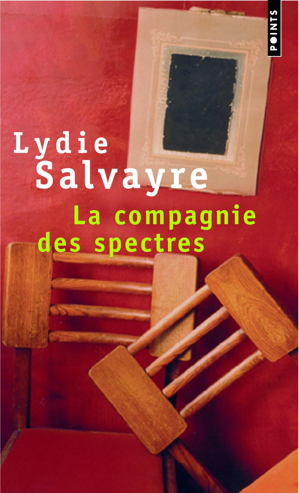
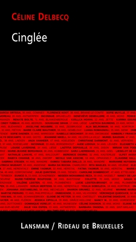
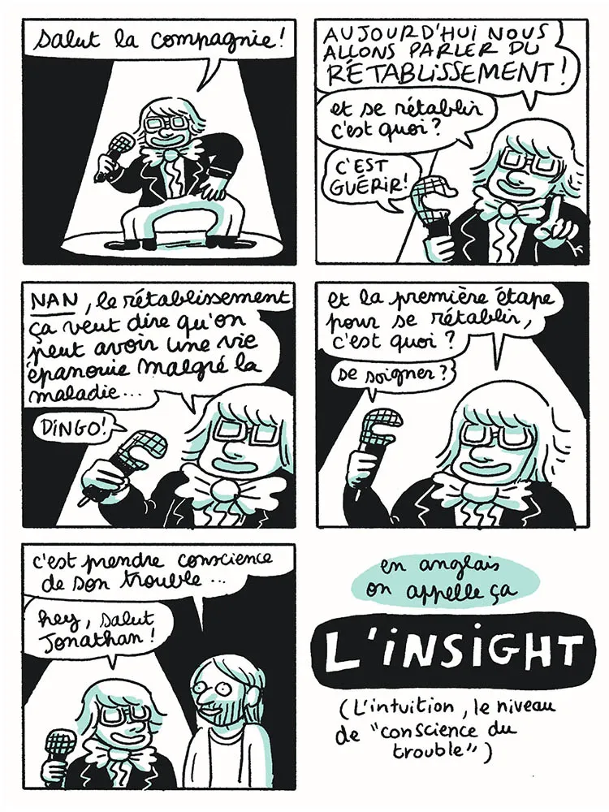

Hier, je devais participer à un club de lecture sur le thème de la “folie”, thématique à interpréter très librement. La vie et les déchirures musculaires étant ce qu’elles sont, je n’ai finalement pas pu m’y joindre. Heureusement tout n’est pas perdu car je me suis servi de mes notes pour rédiger ce qui suit. J’avais restreint mes choix à trois ouvrages : un roman, une pièce de théâtre et une BD.

Comme roman, j’ai choisi La compagnie des spectres, de Lydie Salvayre. J’ai découvert cette singulière autrice via le podcast Bookmakers d’Arte Radio. Dans ce livre sorti en 1997, la folie se manifeste par le biais d’une dame âgée convaincue d’avoir affaire à des sbires du Maréchal Pétain et de Joseph Darnand (fasciste et collabo de la pire espèce). Alors qu’un huissier fait l’inventaire de l’appartement dans lequel elle vit - pauvrement - avec sa fille, cette dernière tente tant bien que mal de faire cesser les torrents d’insultes proférées par sa mère, de conserver un peu de dignité et de raconter son histoire à l’intrus imperturbable. C’est un roman très piquant, souvent drôle de par le ton utilisé, alors qu’il traite pourtant de l’Occupation et des traces indélébiles qu’elle a laissées.

Ce petit livre est la mise en récit d’une pièce de théâtre de l’autrice, metteuse en scène et comédienne tournaisienne Céline Delbecq. Avec ses œuvres, cette dernière réussit toujours à frapper magistralement là où il faut sans jamais user de pathos. Avec Cinglée, qui date de 2019, elle s’est attaquée au sujet des féminicides. La protagoniste, Marta Mendes, immigrée portugaise d’une cinquantaine d’années, commence un jour à traquer dans les journaux toutes les mentions de meurtres de femmes, au point d’en faire une obsession et que plus rien d’autre ne compte. Son appartement est envahi de pages de journaux découpées et elle en vient à écrire au Roi Philippe pour le mettre au courant du problème, puisque c’est évident que s’il savait, il prendrait des mesures. L’autrice porte un regard doux sur son personnage qui perd pied, mais la colère est bien là.
Pour finir, j’ai trouvé que la BD de Se rétablir, de Lisa Mandel, était tout à fait appropriée. Sortie en 2022 aux éditions Exemplaire, elle traite du concept de rétablissement en santé mentale selon lequel, pour citer sa quatrième de couverture, “on peut mener une existence heureuse et épanouie avec un trouble psychique”. L’autrice a recueilli les témoignages de personnes atteintes de troubles divers et les a mis en dessin de façon à la fois pédagogue et rigolote. Bien sûr, les récits contiennent des propos et des événements difficiles, mais le style du trait atténue leur potentiel choquant. C’est en tout cas une super BD, drôle et accessible, pour qui s’intéresse aux questions de santé mentale.
